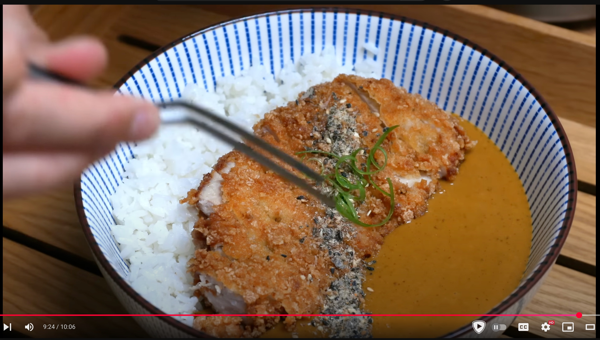

Ingredientes
Instrucciones
- Pochar cebolla a fuego fuerte regulando con agua para que no se queme y se oscurezca. Hasta que esté
marrón caramelo.
- Se echa la manzana rallada o se omite y se echa mil al final.
- Se añaden 3 cucharadas de ketchup.
- Se añade la mantequilla y se derrite.
- Se añade la harina y el curry en polvo y se cocina 5 minutos.
- Se añade el caldo 700-900g y se remueve mucho.
- Se añade la salsa inglesa 30g y la soja 20g y se ajusta la sal.
- Se añade la miel en caso de no haber usado la manzana.
- Se tritura todo opcionalmente.
- Se cocina el arroz.
- Se empana la carne salada en harina huevo y pan y a freir.